Week 10
By the end of this week, you should be able to:
In binary classification problems, we have seen examples of classifiers with decision boundaries linear in the feature space.
\[\log\frac{P(Y=1\mid X=x)}{P(Y=0\mid X=x)}=\beta_0+\beta^\top x.\]
Hence, \(P(Y=1\mid X=x)\ge P(Y=0\mid X=x)\) if and only if
\[\beta_0+\beta^\top x\ge0.\]
The decision boundary is
\[\{x\in\mathbb R^p:\beta_0+\beta^\top x=0\}. \]
\[\delta_k(x)=x^\top\Sigma^{-1}\mu_k-\frac12\mu_k^\top\Sigma^{-1}\mu_k+\log\pi_k,\quad\forall k\in\{0,1\}.\]
Hence, \(\delta_1(x)\ge\delta_0(x)\) if and only if
\[\left(x-\frac{\mu_0+\mu_1}{2}\right)^\top\Sigma^{-1}(\mu_1-\mu_0)+\log\frac{\pi_1}{\pi_0}\ge0.\]
The decision boundary is
\[\{x\in\mathbb R^p:\alpha_0+\alpha^\top x=0\}\]
for some \(\alpha_0\) and \(\alpha\in\mathbb R^p\).
Binary classification: predicting a target with two values, \(y\in\{-1,+1\}\), (notational change from the past).
\[w^\top x+b=0\]
for some weights \(w\in\mathbb R^p\) and \(b\in\mathbb R\).
\[\begin{aligned}w^\top x+b&>0,&&\text{if }y=1\\w^\top x+b&<0,&&\text{if }y=-1.\end{aligned}\]
Suppose we are given these data points from two different classes and want to find a linear classifier that separates them.
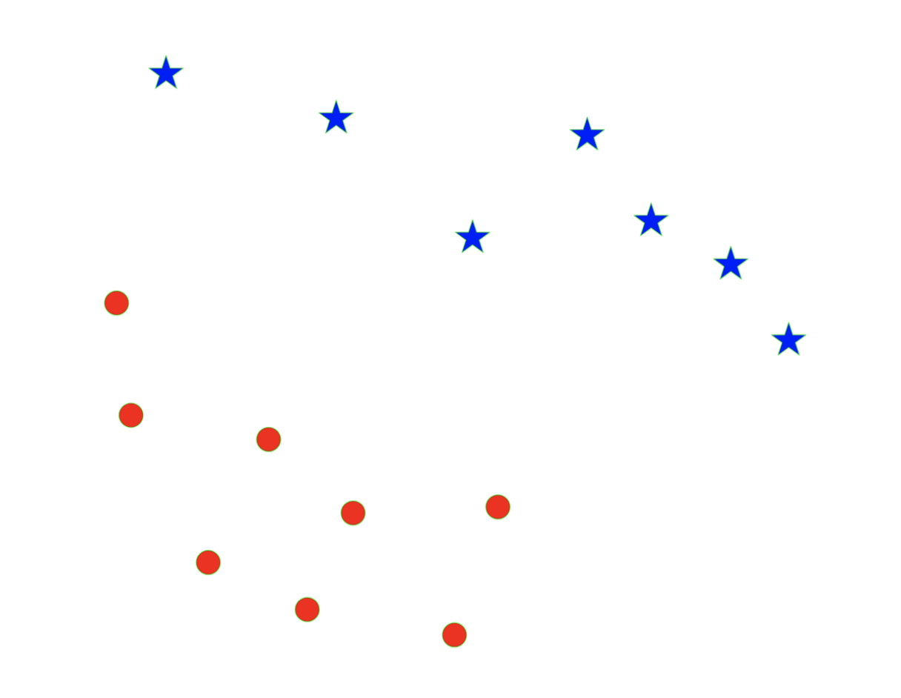
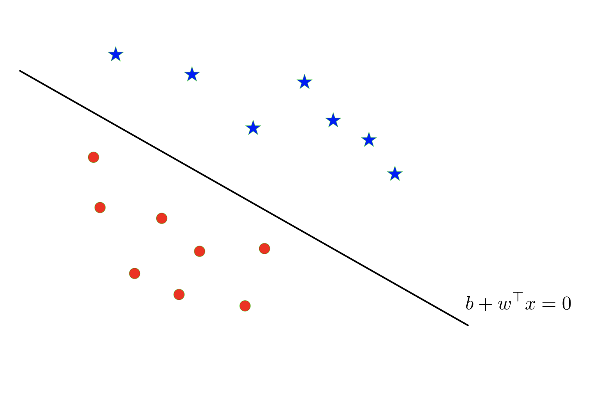
To correctly classify all points we require that
\[\operatorname{sign}(w^\top x_i+b)=y_i\qquad\text{for all }i\in[n].\]
However:
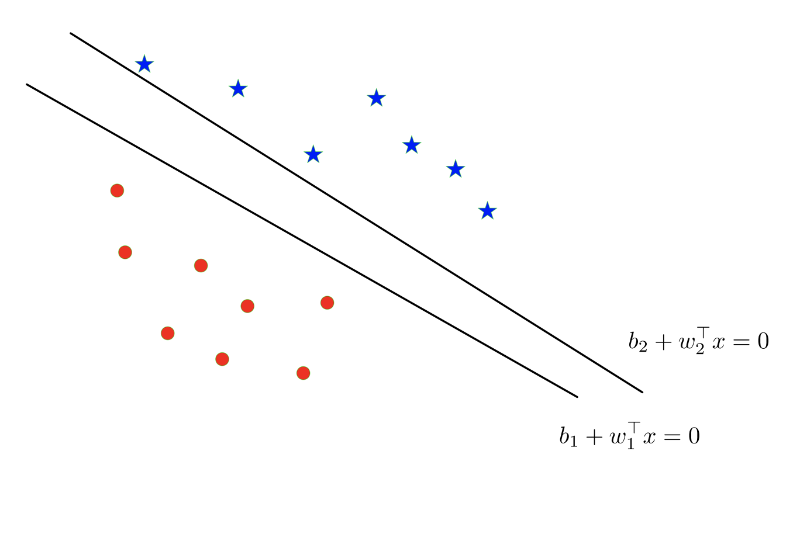
There are multiple separating hyperplanes, determined by different parameters \((w,b)\).
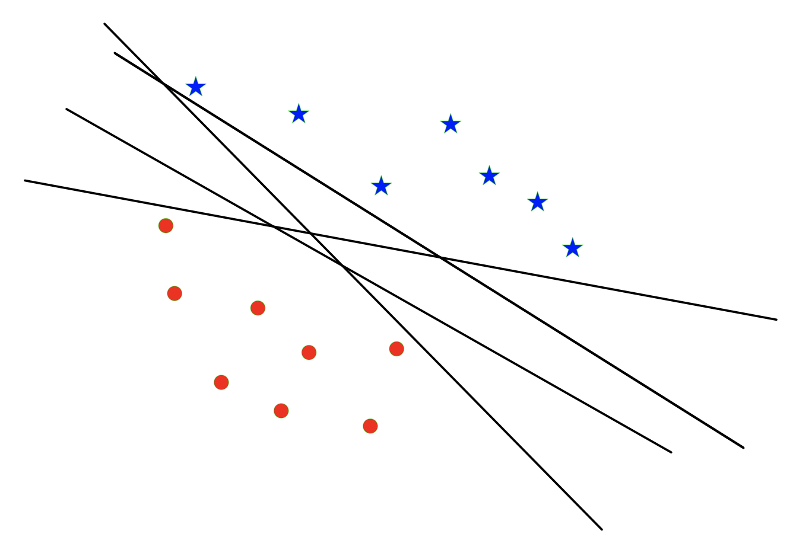
Optimal Separating Hyperplane: A hyperplane that separates two classes and maximizes the distance to the closest point from either class, i.e., maximize the margin of the classifier.
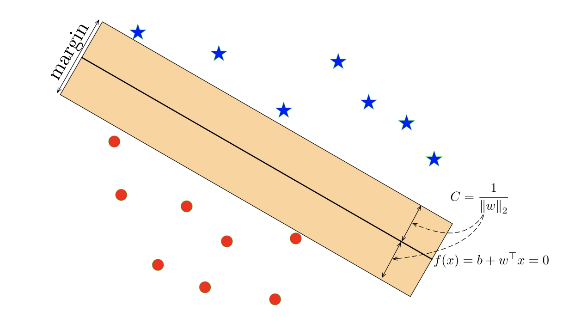
Intuitively, ensuring that a classifier is not too close to any data points leads to better generalization on the test data.
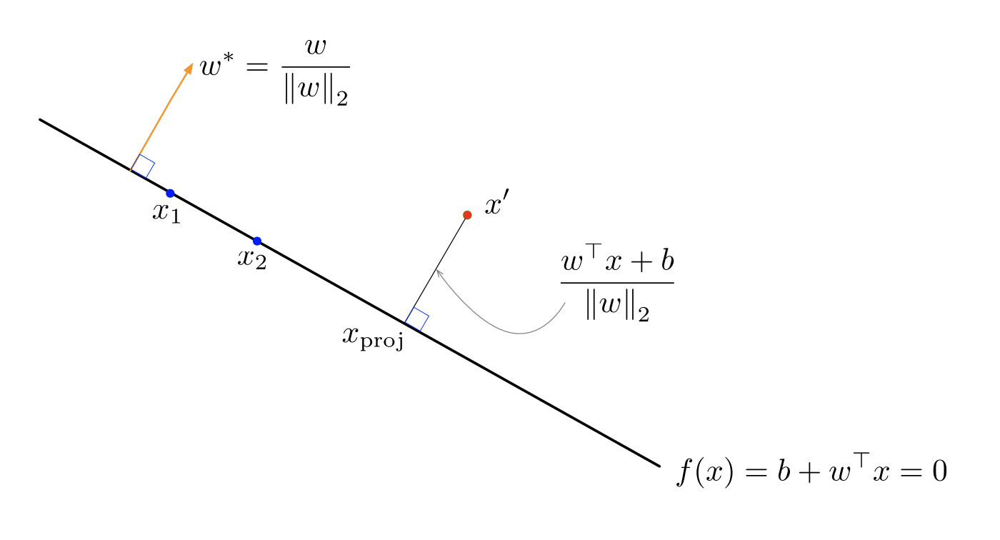
Recall that the decision hyperplane is orthogonal (perpendicular) to \(w\). I.e., for any two points \(x_1\) and \(x_2\) on the decision hyperplane we have that
\[w^\top(x_1-x_2)=0.\]
The vector \(w^*=\frac{w}{\|w\|_2}\) is a unit vector pointing in the same direction as \(w\).
The same hyperplane could equivalently be defined in terms of \(w^*\).
Question: how to compute the distance from a point \(x'\) to the hyperplane \(\{x:b+w^\top x=0\}\).
Fix the point \(\mathbf{x'}\) as well as \(\mathbf{w}\) and \(b\) which determine the hyperplane.
\[\mathbf{w}^\top \mathbf{x}_{\mathrm{proj}}+b=0.\]
\[ \begin{aligned} \|\mathbf{x}'-\mathbf{x}_{\mathrm{proj}}\|_2 &=\left|(\mathbf{x}'-\mathbf{x}_{\mathrm{proj}})^\top \frac{\mathbf{w}}{\|\mathbf{w}\|_2}\right|\\ &=\frac{|\mathbf{w}^\top\mathbf{x}'-\mathbf{w}^\top\mathbf{x}_{\mathrm{proj}}|}{\|\mathbf{w}\|_2} =\frac{|\mathbf{w}^\top\mathbf{x}'+b|}{\|\mathbf{w}\|_2}. \end{aligned} \]
We want to choose \(\mathbf{w}\) and \(b\) such that:
\[ \operatorname{sign}(\mathbf{w}^\top \mathbf{x}_i+b)=y_i \qquad\text{for all }i\in[n] \]
\[ \frac{|\mathbf{w}^\top \mathbf{x}_i+b|}{\|\mathbf{w}\|_2}, \]
is as large as possible.
This leads to the max-margin objective:
\[ \begin{aligned} \max_{\mathbf{w},b}\ \min_{i\in[n]} &\frac{|\mathbf{w}^\top \mathbf{x}_i+b|}{\|\mathbf{w}\|_2}\\ \text{s.t. }&y_i(\mathbf{w}^\top \mathbf{x}_i+b)\ge0, \quad\text{for all }i\in[n]. \end{aligned} \]
Equivalently,
\[ \begin{aligned} \max_{\mathbf{w},b}\ \min_{i\in[n]} &\frac{y_i^2(\mathbf{w}^\top \mathbf{x}_i+b)^2}{\|\mathbf{w}\|_2^2}\\ \text{s.t. }&y_i(\mathbf{w}^\top \mathbf{x}_i+b)\ge0, \quad\text{for all }i\in[n]. \end{aligned} \]
More compactly,
\[ \begin{aligned} \min_{\mathbf{w},b}\ &\frac{\|\mathbf{w}\|_2^2}{M^2}\\ \text{s.t. }&y_i(\mathbf{w}^\top \mathbf{x}_i+b)\ge M, \quad\text{for all }i=1,\ldots,n. \end{aligned} \]
The constraints are called the margin constraints.
W.l.o.g. we can set \(M=1\). (Why?)
Max-margin objective:
\[ \begin{aligned} \min_{\mathbf{w},b}\ &\|\mathbf{w}\|_2^2\\ \text{s.t. }&y_i(\mathbf{w}^\top \mathbf{x}_i+b)\ge1 \qquad i=1,\ldots,n \end{aligned} \]
Intuitively, if the margin constraint is not tight for \(x_i\), we could remove \(x_i\) from the training set and the optimal hyperplane would be the same.¹
The important training points are those with equality constraints, and are called support vectors.
Hence, this algorithm is called the (hard-margin) Support Vector Machine (SVM). SVM-like algorithms are often called max-margin or large-margin.
¹This can be rigorously shown via the K.K.T. conditions.
Primal-formulation:
\[ \begin{aligned} \min_{\mathbf{w},b}\ &\|\mathbf{w}\|_2^2\\ \text{s.t. }&y_i(\mathbf{w}^\top \mathbf{x}_i+b)\ge1 \qquad i=1,\ldots,n \end{aligned} \]
For \(\alpha_i\ge0\) for all \(i=1,\ldots,n\), write the Lagrangian function
\[ L(\mathbf{w},b,\alpha)=\|\mathbf{w}\|_2^2+\sum_{i=1}^n\alpha_i[1-y_i(\mathbf{w}^\top \mathbf{x}_i+b)], \]
Taking the derivative w.r.t. \(\mathbf{w}\) and \(b\) yields
\[ \mathbf{w}=\frac12\sum_{i=1}^n\alpha_i y_i \mathbf{x}_i, \qquad \sum_{i=1}^n\alpha_i y_i=0. \]
Plugging into \(L(\mathbf{w},b,\alpha)\) yields
\[ \begin{aligned} &\frac14\sum_{i=1}^n\sum_{j=1}^n\alpha_i\alpha_j y_i y_j \mathbf{x}_i^\top \mathbf{x}_j +\sum_{i=1}^n\alpha_i -\frac12\sum_{i=1}^n\sum_{j=1}^n\alpha_i\alpha_j y_i y_j \mathbf{x}_i^\top \mathbf{x}_j -b\sum_{i=1}^n\alpha_i y_i\\ &=\sum_{i=1}^n\alpha_i -\frac14\sum_{i=1}^n\sum_{j=1}^n\alpha_i\alpha_j y_i y_j \mathbf{x}_i^\top \mathbf{x}_j. \end{aligned} \]
The dual problem is
\[ \begin{aligned} \max_\alpha\quad &\sum_{i=1}^n\alpha_i-\frac14\sum_{i=1}^n\sum_{j=1}^n\alpha_i\alpha_j y_i y_j \mathbf{x}_i^\top \mathbf{x}_j\\ \text{s.t. }&\sum_{i=1}^n\alpha_i y_i=0,\quad\alpha_i\ge0,\quad i=1,\ldots,n. \end{aligned} \]
The K.K.T. conditions ensure the following relationships between the primal and dual formulations.
\[\hat{\mathbf{w}}=\frac12\sum_{i=1}^n\hat\alpha_i y_i \mathbf{x}_i,\qquad\begin{cases}\hat\alpha_i>0,&\text{if }y_i(\mathbf{\hat{w}^\top x}_i+\hat b)=1\\\hat\alpha_i=0,&\text{if }y_i(\mathbf{\hat{w}^\top x}_i+\hat b)>1.\end{cases}\]
\[\operatorname{sign}(\mathbf{\hat{w}^\top x}+\hat b).\]
How can we apply the max-margin principle if the data are not linearly separable?
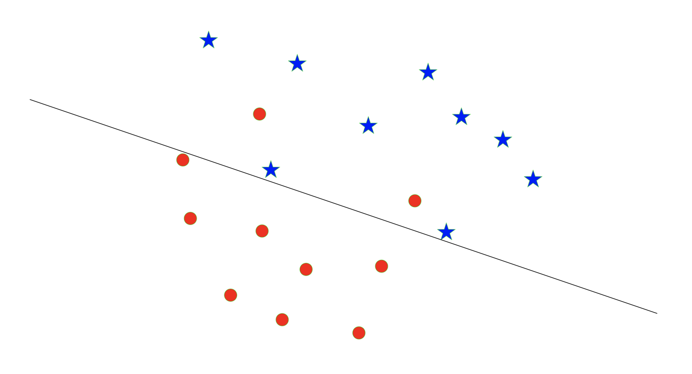
We introduce slack variables \(\zeta=(\zeta_1,\ldots,\zeta_n)\) and consider
\[ \begin{aligned} \min_{\mathbf{w},b,\zeta}\quad&\|\mathbf{w}\|_2^2\\ \text{s.t. }&y_i(\mathbf{w}^\top \mathbf{x}_i+b)\ge1-\zeta_i,\quad\zeta_i\ge0,\quad\text{for all }i=1,\ldots,n\\ &\sum_{i=1}^n\zeta_i\le K. \end{aligned} \]
\[ \begin{aligned} \min_{\mathbf{w},b,\zeta}\quad&\|\mathbf{w}\|_2^2+C\sum_{i=1}^n\zeta_i\\ \text{s.t. }&y_i(\mathbf{w}^\top \mathbf{x}_i+b)\ge1-\zeta_i,\quad\zeta_i\ge0,\quad i=1,\ldots,n. \end{aligned} \]
\[ \min_{\mathbf{w},b}\ \frac1n\sum_{i=1}^n\underbrace{\max\{0,1-y_i(\mathbf{w}^\top \mathbf{x}_i+b)\}}_{\text{hinge loss}}+\lambda\|\mathbf{w}\|_2^2 \]
with \(\lambda=1/(nC)\). Hence, the soft-margin SVM can be seen as a linear classifier with the hinge loss and the ridge penalty.
The hinge loss:
\[ L_{\mathrm{hinge}}(\mathbf{w},b)=\max\{0,1-y_i(\mathbf{w}^\top \mathbf{x}_i+b)\} \]
We only want to minimize \(1-y_i(\mathbf{w}^\top \mathbf{x}_i+b)\) when it is positive.
\[ \begin{aligned} y_i(\mathbf{w}^\top \mathbf{x}_i+b)\ge1 &\quad\Rightarrow\quad\checkmark\text{ + out of margin}\\ y_i(\mathbf{w}^\top \mathbf{x}_i+b)\in[0,1] &\quad\Rightarrow\quad\checkmark\text{ but within margin}\\ y_i(\mathbf{w}^\top \mathbf{x}_i+b)<0 &\quad\Rightarrow\quad\times \end{aligned} \]
The 0-1 loss
\[ L_{0\text{-}1}(\mathbf{w},b)=\mathbf{1}\{y_i(\mathbf{w}^\top \mathbf{x}_i+b)<0\}. \]
Hinge loss compared with the 0-1 loss:
\[y=\max\{0,1-x\}\qquad\text{v.s.}\qquad y=\mathbf1\{x<0\}.\]
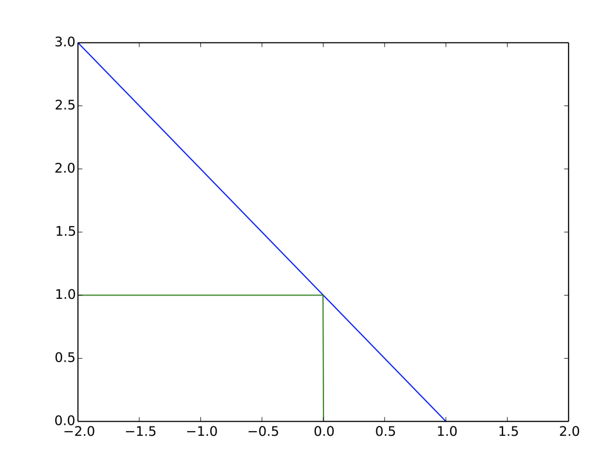
Above, the hinge loss is shown in blue, and the 0-1 loss is shown in green.
Soft-margin SVM is equivalent to, for some \(C=C(K)\),
\[ \begin{aligned} \min_{\mathbf{w},b,\zeta}\quad&\|\mathbf{w}\|_2^2+C\sum_{i=1}^n\zeta_i\\ \text{s.t. }&y_i(\mathbf{w}^\top \mathbf{x}_i+b)\ge1-\zeta_i,\quad\zeta_i\ge0,\quad i=1,\ldots,n. \end{aligned} \]
It can be shown² that the dual-formulation of the soft-margin SVM is
\[ \begin{aligned} \max_\alpha\quad &\sum_{i=1}^n\alpha_i-\frac14\sum_{i=1}^n\sum_{j=1}^n\alpha_i\alpha_j y_i y_j \mathbf{x}_i^\top \mathbf{x}_j\\ \text{s.t. }&\sum_{i=1}^n\alpha_i y_i=0,\quad0\le\alpha_i\le C,\quad i=1,\ldots,n. \end{aligned} \]
Here \(C>0\) is the tuning parameter.
²Chapter 12.2.1 in ESL.
Recall
\[ \begin{aligned} \max_\alpha\quad &\sum_{i=1}^n\alpha_i-\frac14\sum_{i=1}^n\sum_{j=1}^n\alpha_i\alpha_j y_i y_j \color{red}{\mathbf{x}_i^\top \mathbf{x}_j}\\ \text{s.t. }&\sum_{i=1}^n\alpha_i y_i=0,\quad0\le\alpha_i\le C,\quad i=1,\ldots,n. \end{aligned} \]
Represent \(\mathbf{x}_i\) in different bases, \(h(\mathbf{x}_i)\), to have non-linear boundary (in \(\mathbf{x}_i\)).
The only change is the objective function
\[ \max_\alpha\ \sum_{i=1}^n\alpha_i-\frac14\sum_{i=1}^n\sum_{j=1}^n\alpha_i\alpha_j y_i y_j \color{red}{h(\mathbf{x}_i)^\top h(\mathbf{x}_j)}. \]
\[ K(\mathbf{x}_i,\mathbf{x}_j)=h(\mathbf{x}_i)^\top h(\mathbf{x}_j),\quad\forall i\ne j\in\{1,\ldots,n\}. \]
\[ K(\mathbf{x}_i,\mathbf{x}_j),\quad\forall i\ne j\in\{1,\ldots,n\}. \]
The corresponding \(h\) would be polynomials. For example, consider \(d=2\), \(\mathbf{x}_i=x_i\) and \(h(\mathbf{x}_i)=[1,\sqrt2 x_i,x_i^2]\), then
\[ K(\mathbf{x}_i,\mathbf{x}_j)=h(\mathbf{x}_i)^\top h(\mathbf{x}_j)=1+2x_ix_j+x_i^2x_j^2=(1+\mathbf{x}_i^\top \mathbf{x}_j)^2. \]
The corresponding \(h(\mathbf{x}_i)\) has infinite dimensions!
\[\operatorname{sign}(\mathbf{\hat{w}^\top x}+\hat b).\]
Hence, SVM does not estimate the posterior probability.
\[z_i=-\mathbf1\{y_i=1\}+\mathbf1\{y_i=2\}.\]
Fit SVM by using \((\mathbf{x}_i,z_i)\) with \(y_i\in\{1,2\}\).
\[z_i=-\mathbf1\{y_i=1\}+\mathbf1\{y_i=3\}.\]
Fit SVM by using \((\mathbf{x}_i,z_i)\) with \(y_i\in\{1,3\}\).
Repeat for all pairs.
For each test point \(\mathbf{x}_0\), assign it to the majority class predicted by \(\binom K2\) SVMs.
\[z_i=2\cdot\mathbf1\{y_i=1\}-1.\]
Fit SVM and let its parameter be \((\hat b^{(1)},\hat{\mathbf{w}}^{(1)})\).
\[z_i=2\cdot\mathbf1\{y_i=2\}-1.\]
Fit SVM and let its parameter be \((\hat b^{(2)},\hat{\mathbf{w}}^{(2)})\).
Repeat for all classes.
For each test point \(x_0\), assign it to the class
\[\arg\max_{k\in\mathcal C}\left(\hat b^{(k)}+\mathbf{x_0^\top\hat{w}}^{(k)}\right).\]
Unsupervised learning is the study of learning without labels. What can we do without labels?
How can we even define what learning means without labels?
In some sense, the ML community does not exactly agree on what it means to do unsupervised learning, but intuitively, unsupervised learning is the task of
Some examples of situations where you’d use unupservised learning
You want to understand how a scientific field has changed over time. You want to take a large database of papers and model how the distribution of topics changes from year to year. But what are the topics?
You’re a biologist studying animal behavior, so you want to infer a high-level description of their behavior from video. You don’t know the set of behaviors ahead of time.
You want to reduce your energy consumption, so you take a time series of your energy consumption over time, and try to break it down into separate components (refrigerator, washing machine, etc.).
Common themes: you have some data, and you want to infer some structure underlying the data.
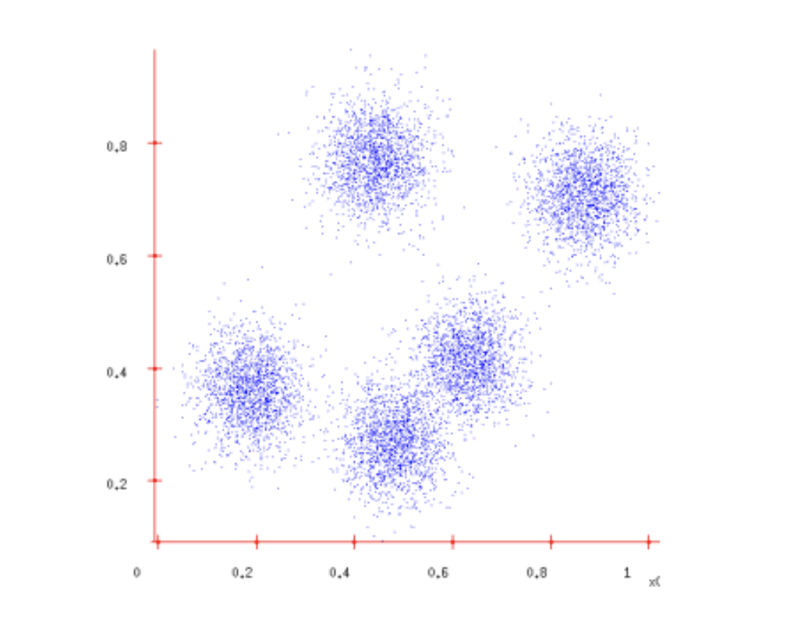
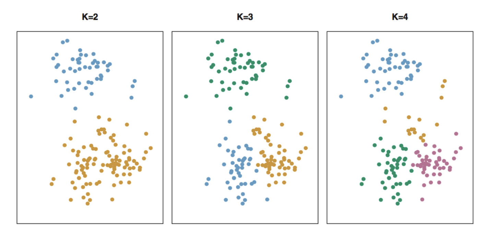
K-means clustering is a simple approach for partitioning a data set into \(K\) distinct, non-overlapping clusters.
Let \(C_1,\ldots,C_K\) denote sets that form a partition of \(\{1,\ldots,n\}\):
\[C_k\cap C_{k'}=\varnothing,\quad\text{for all }k\ne k'.\]
Hence every single observation belongs to one and only one cluster. The goal is to find such partition \(C_1,\ldots,C_K\) for certain purpose.
\[\min_{C_1,\ldots,C_K}\sum_{k=1}^K W(C_k).\]
In words, we want to partition the observations into \(K\) clusters such that the total within-cluster variation, summed over all \(K\) clusters, is as small as possible.
\[\begin{aligned}W(C_k)&=\frac1{|C_k|}\sum_{i,i'\in C_k}\sum_{j=1}^p(x_{ij}-x_{i'j})^2\\&=\frac1{|C_k|}\sum_{i,i'\in C_k}\|\mathbf{x_i-x}_{i'}\|_2^2\end{aligned}\]
where \(|C_k|\) denotes the number of observations in the \(k\)th cluster.
Verify that
\[W(C_k)=\frac1{|C_k|}\sum_{i\in C_k}\|\mathbf{x}_i-\bar{\mathbf{x}}_k\|_2^2.\]
\[\min_{C_1,\ldots,C_K}\sum_{k=1}^K W(C_k)=\min_{C_1,\ldots,C_K}\sum_{k=1}^K\frac1{|C_k|}\sum_{i\in C_k}\|\mathbf{x}_i-\bar{\mathbf{x}}_k\|_2^2.\]
High level overview of algorithm:
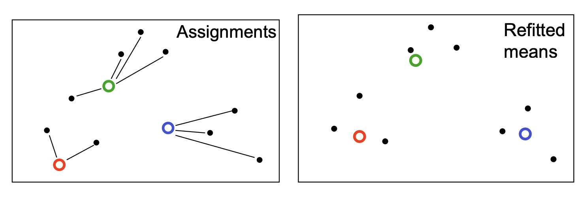
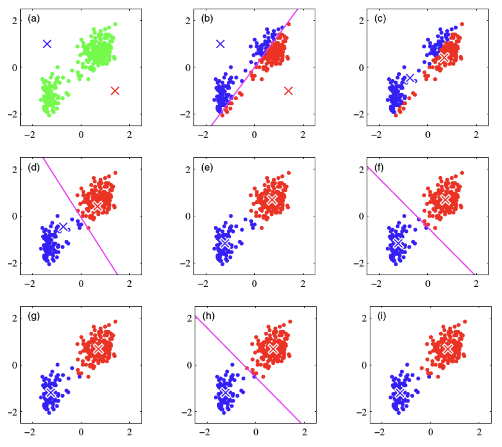
Figure from Bishop
Animation of the algorithm: http://shabal.in/visuals/kmeans/5.html.
Algorithm 10.1 K-Means Clustering
\[\min_{C_1,\ldots,C_K}\sum_{k=1}^K\frac1{|C_k|}\sum_{i\in C_k}\|\mathbf{x}_i-\bar{\mathbf{x}}_k\|_2^2.\]
Assignment step: fixing the centers, re-assignment will decrease the total within-cluster variation.
Re-centering step: fixing the assignments, re-centering the data within clusters will reduce the total within-cluster variation.
Stopping criterion for convergence: when the assignments do not change in the assignment step, we have converged (to at least a local minimum).
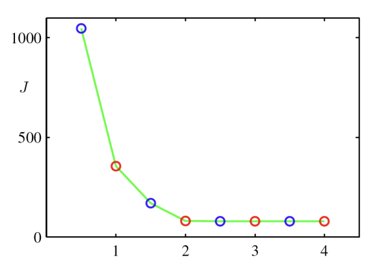
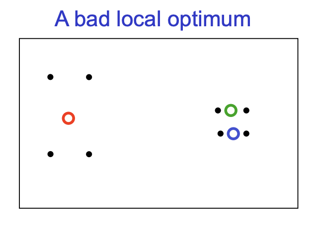
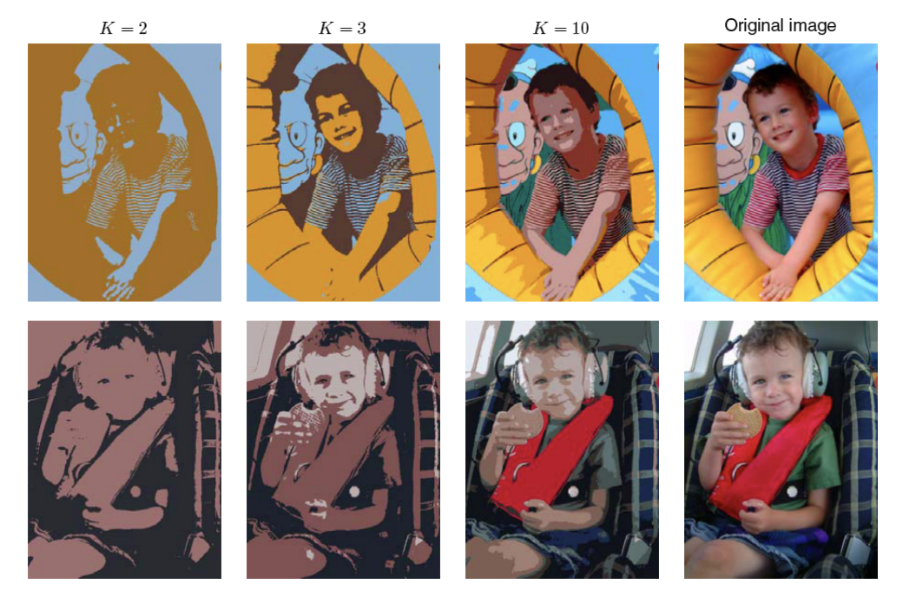
Figure from Bishop
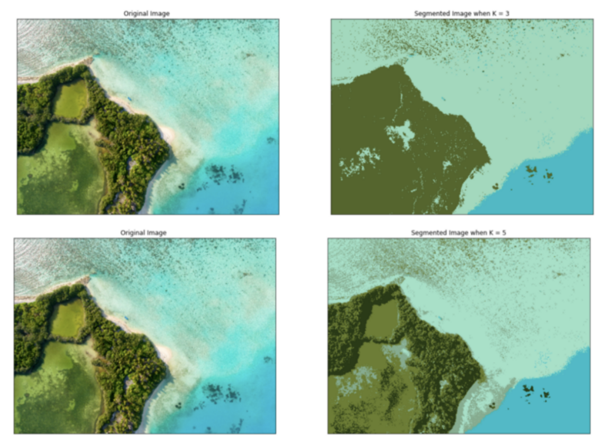
Support Vector Machines (SVMs) find a decision boundary that maximizes the margin between classes. Support vectors are the observations that determine this boundary.
Soft-margin SVMs allow margin violations, balancing classification performance and model complexity through regularization.
Kernel trick allows SVMs to construct nonlinear decision boundaries using kernel functions.
K-means clustering is an unsupervised learning method that partitions observations into \(K\) clusters by minimizing within-cluster variation.
K-means algorithm alternates between assigning observations to the nearest centroid and updating cluster centers. It converges to a local minimum and can be sensitive to initialization.
Next Week: Continuing unsupervised learning